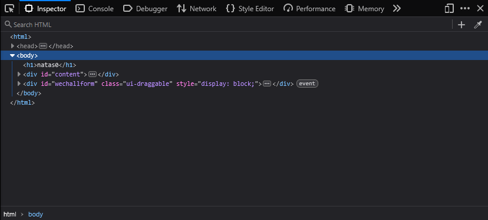
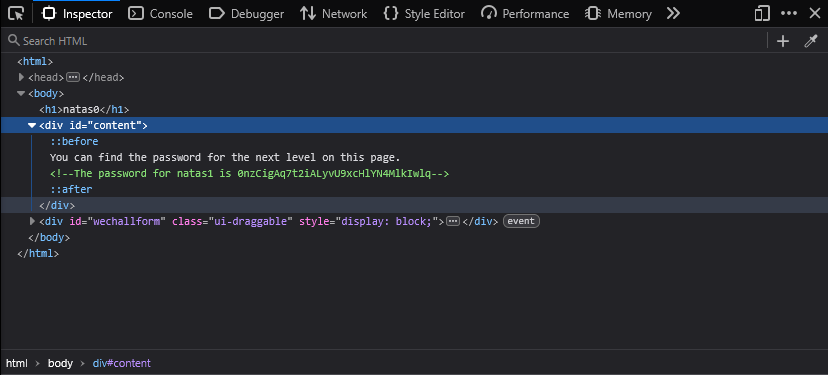

February 7, 2026
The first couple of levels are pretty straightforward; they mainly teach you how to access and use tools you’ll need later on.
As mentioned earlier, this level is very easy. When you load the page, you’re shown a message that reads:
You can find the password for the next level on this page.
The simplest way to do basic reconnaissance on any webpage is by using Inspect Element / Developer Tools.
Press Ctrl + Shift + I to open them.
With Inspect Element open, it’ll appear docked on one side of the screen, showing the page’s HTML.

After clicking on the content
div, you can find the flag:

0nzCigAq7t2iALyvU9xcHlYN4MlkIwlq
Simple stuff.
back